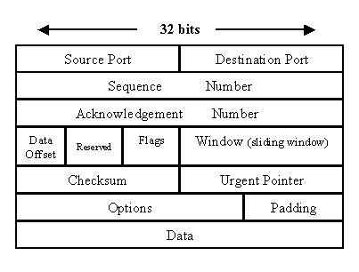

TCP packet

-
Source PortandDestination Port(16 bits each) ideify the end points of connection -
`Sequence Number (32 bits) specifies the initial seq number to be used in the upcomming transmission.
-
Acknowledgement Number(32 bits) the value of next seq number that the sender of the segment is expectin to receive, if the ACK control bit is set -
Data Offset (a.k.a., Header length)tells how many 32-bit words are contained in the TCP header. -
Reserved(6 bits) for future use -
Flags(6 bits) contains various flags:-
URG - urgent data
-
ACK - acknowledge data is received
-
PSH - data should pass to app asap
-
RST - Reset the connection
-
SYN - synchronize sequence numbers to initiate a connection
-
FIN - sender finished sending data
-
-
Window(16 bits) the size of the sender’s receive window, i.e., the buffer size for incoming data -
Checksum(16 bits) checksum to verify whether header is damaged in transit -
Urgent Pointer(16 bits) points to the first urgent data byte in the packet -
Options(variable length) specifies various TCP options -
Data(variable length) contains uper-layer info
Reserved private networks
The organization that distribute IP addresses to the world reserves a range of IP address for private networks.
-
192.168.0.0 - 192.168.255.255 (65,536 IP addresses 2^16)
-
172.16.0.0 - 172.31.255.255 (1,048,576 IP addresses 2^20)
-
10.0.0.0 - 10.255.255.255 (16,777,216 IP addresses 2^24)
L4-L7 network service definition
-
L1 - the physical layer represent the electrical and phisical representation of the system. include cable type, pin layout, radio frequency etc.
-
L2 - the data link layer is for node-to-node data transfer directly, and handle error correction from the physical layer. protocol e.g., MAC, LLC
-
L3 - the network layer is for packet forwarding, including routing through different routers. protocol e.g. ip
-
L4 - the transport layer is for transmission of data between points on a network. protocol e.g., tcp/udp
-
L5 - the session layer is for managing the dialogues between computers. L5 establishes and manages connections between applications. And gracefully close sessions. protocol e.g., rpc
-
L6 - the presentation layer is responsible for establishing context within the applications, in which different syntax ans semantics are present. Thsi layer provides mapping and communication to various applications. protocol e.g. SSL/TLS
-
L7 - the application layer is nearest to the end user. The user and the application are directly interacting, communicating with both. protocol e.g., HTTP/SIP
s
Network Address Translation (NAT)

-
Each NAT handle translation between indide and outside addresses
-
NAT is a process in which your router changes your private ip (inside) to public ip (outside), so that it can send to internet
-
when packet come back, it reverse the change - from public ip to private ip, and then forward the traffic back to your computer
-
In both direction, NAT rewrite the IP header of the packet.

-
Network Address Translation (NAT)
-
Network PORT Address translation (NAPT)
Suppose, in a network, two hosts A and B are connected. Now, both of them request for the same destination, on the same port number, say 1000, on host side, at the same time. If NAT does only translation of ip addresses, then when their packets will arrive at the NAT, both of their IP addresses would be masked by the public IP address of the network and sent to the destination. Destination will send replies on the public ip address of the router. Thus, on receiving reply, it will be unclear to NAT as to which reply belongs to which host (because source port numbers for both A and B are same). Hence, to avoid such a problem, NAT masks the source port number as well and makes an entry in the NAT table (port 3000).